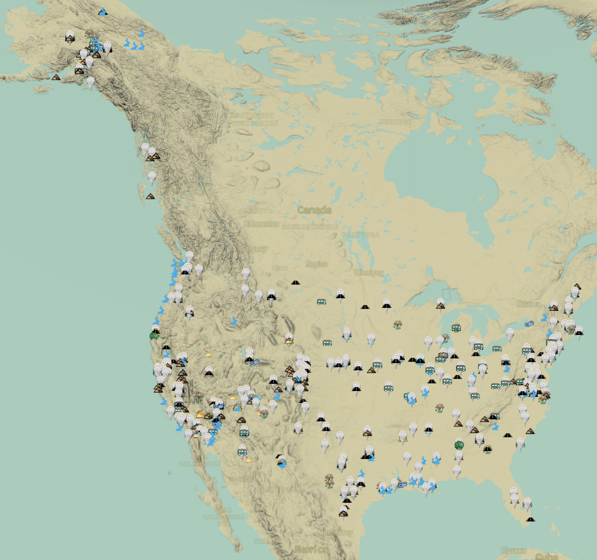
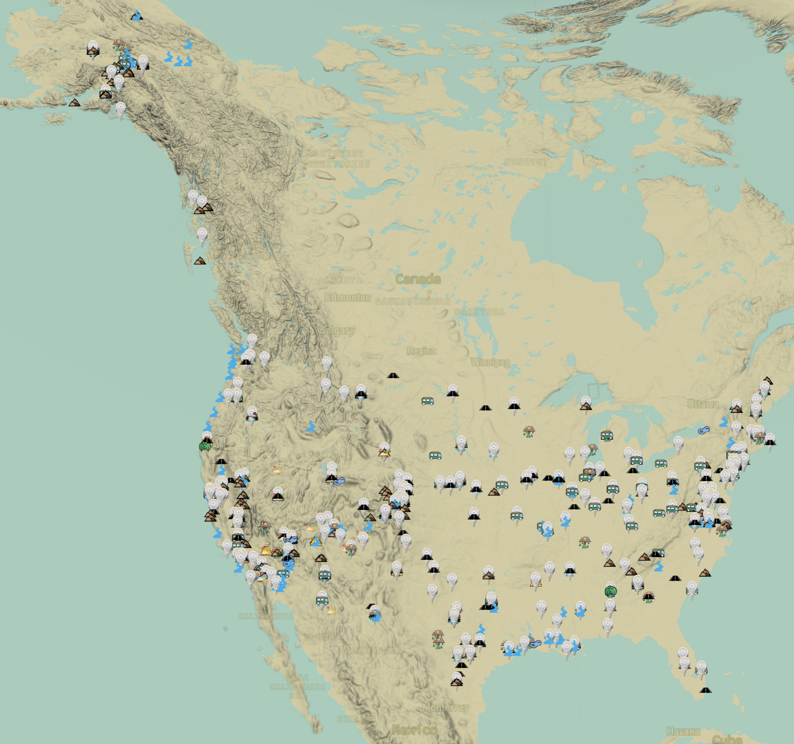

Computational Projects
When Text Meets Map
Capstone Project
Memory Tides
Data Mourning Studio Clinic, Tuvalu
Bento
Design Intelligence Project
All Data Are Spatial
Data Visualization Project
Terracurve Tower
BIM Workflow, 3D Modeling, Climate Analysis
Information is power.
Housing Search Process
City Glitch
Urban Design Project, Spatial AI
Seeing with Algorithm
Computer Vision Project
Spatial Intelligence
On-going Project
Project Details:
When Text Meets Map
When Text Meets Map explores the intersection of literature and geography by transforming narrative texts into spatial journeys. The project extracts locations from books such as Walden, On the Road, and Into the Wild, and reimagines them as interactive maps where readers can trace the paths of characters, ideas, and emotions. By aligning narrative structures with geographic data, the project reveals how stories are deeply rooted in place and how landscapes shape the experience of reading.
Through computational text analysis and geospatial visualization, When Text Meets Map turns literary works into dynamic terrains that audiences can navigate. The project reframes storytelling as a spatial experience, inviting users to see texts not only as words on a page, but as lived geographies that unfold across time and space. It highlights how literature both reflects and reconstructs our relationship to the world around us.
Software & Skills
- Python & Natural Language Processing
- Named Entity Recognition
- GeoJSON Processing
- Mapbox GL JS
- Interactive Storytelling


 

Project Info
- Type: Narrative Mapping
- Focus: Data Visualization
- Technology: NPL, Web-based Mapping, AI-assisted Toolkits
- Innovation: Text-Spatial Integration
Memory Tides
Memory Tides is an interactive data-driven installation that maps memories as if they were shifting landscapes. Instead of treating recollections as fixed points in time, the project visualizes them as tidal movements that ebb, overlap, and resurface. By combining computational design with spatial visualization, the work transforms intangible narratives into an immersive environment where memory behaves like water—fluid, layered, and constantly in motion.
Through this dynamic mapping, Memory Tides reframes memory as a living geography rather than a static archive. The project invites audiences to experience how personal and collective histories flow together, revealing the fragile yet enduring nature of remembrance. It suggests that memory is not only something we hold, but also something that holds and reshapes us, much like tides shaping the shoreline.
Software & Skills
- Python Data Processing
- TouchDesigner
- Projection Mapping
- Interactive Installation Design
- Climate Narrative Research

Project Info
- Type: Data Mourning Studio
- Location: Tuvalu
- Focus: Climate Change Impact
- Approach: Interactive Storytelling
Bento
Bento is an experimental project that explores how urban data can inform the design of future retail environments. Using open datasets from New York City, raw information such as CSV and GeoJSON files were processed through Python scripts, cleaned, and transformed into matrix formats for mapping and visualization. This pipeline made visible the spatial and social patterns embedded in consumer behaviors, mobility flows, and neighborhood dynamics. By translating these insights into design strategies, Bento proposes an adaptive retail model that goes beyond static floor plans. The project demonstrates how data can be repurposed as design intelligence, supporting flexible layouts, personalized services, and new forms of community engagement. In doing so, it highlights the potential of computational design to connect architecture, open data, and emerging technologies in shaping responsive and user centered urban experiences.
Software & Skills
- Rhino & Grasshopper
- Python Scripting
- Data Visualization
- Adobe Suites
- Rhino Compute


Project Info
- Type: Design Intelligence Project
- Fall 2024Design Intelligent Prof. Danil Nagy
- Focus: Future Retail
- Technology: Adaptive Systems
- Corporate project with Lin Genda, Jain Vaibhav, Ye Zhiqing, Zheng Yilin
All Data Are Spatial
All Data Are Spatial investigates how datasets that appear abstract or purely numerical can be reinterpreted through a geographic lens. The project argues that every dataset has a spatial dimension—whether explicit, hidden, or implied—and seeks to uncover these connections by transforming raw public data into mappable forms. By doing so, it challenges the conventions of how open data is typically presented and invites new ways of seeing relationships across scales and contexts.
Through computational workflows and interactive mapping, All Data Are Spatial translates diverse datasets into geospatial formats, unifying them for broader accessibility and usability. The project demonstrates how reframing information spatially can reveal hidden patterns, create intuitive pathways for exploration, and expand engagement with public knowledge. It is both a critique of existing data infrastructure and a proposition for more transparent, flexible, and spatially aware data ecosystems.
Software & Skills
- Python Data Wrangling
- QGIS & GIS Analysis
- D3.js Visualization
- Open Data Pipelines
- Spatial Storytelling
Project Info
- Type: Data Visualization
- Focus: Spatial Data Theory
- Innovation: Non-geographic Spatialization
- Application: Universal Data Understanding
Terracurve Tower
The mixed-use building contains commercial, office, hotel spaces and sustainable transitions between indoor and outdoor environments. A terracotta-to-glass facade, landscaped terraces connecting hotel floors, double-height lobbies, vibrant commercial spaces, and rooftop gardens shape the design.
Used Rhino and Grasshopper for massing studies, target view optimization, and facade design, transitioning effortlessly into Revit with Rhino.Inside.Revit. The project reinforces interdisciplinary workflows and demonstrates advanced BIM integration for precise, innovative execution.
Software & Skills
- Revit + Rhino.Inside
- Rhino 3D
- Grasshopper
- Facade Optimization


Project Info
- 1205 Broadway, New York, NY
- Fall 2024 - Rethinking BIM: Exploring Interoperability in Design Prof. Joseph A. Brennan
- Type: Mixed-use
- Focus: Environmental Integration & Digital Workflow
- Corporate project with Manas Bhatia / Yilin Zheng
Information is power.
Information is Power investigates how information asymmetry shapes housing accessibility. The project focuses on the housing search process, where unequal access to listings, pricing, and availability data determines who secures stable housing and who is excluded. By visualizing patterns in housing market dynamics, it reveals how hidden “information walls” reinforce inequality across urban life.
“Information is power. Access to information enhances one’s power.” — Jo Freeman. This project takes Freeman’s words as a starting point, showing how the uneven distribution of information creates imbalance in opportunity. Data, often presented as neutral, becomes a decisive factor in who has the power to choose, relocate, or remain in place.
“Equal access to resources needed by the group. This is not always perfectly possible, but should be striven for.” — Jo Freeman. Guided by this call, Information is Power insists on breaking the Information Wall, imagining a housing landscape where transparency and open access are not privileges but shared rights. Through computational visualization and spatial analysis, the project reframes data as both barrier and tool—revealing how equitable information-sharing could reshape access to homes and rebalance power within the housing market.
Software & Skills
- Python & Pandas
- Housing Market Data Analysis
- Census & Open Data Integration
- Interactive Storytelling
- Data Ethics Research
Project Info
- Type: Housing Search Process
- Focus: Information Asymmetry
- Method: Data Analysis
- Impact: Housing Accessibility
- Website: Project Page
City Glitch
An urban design project that uses spatial AI to identify and visualize urban anomalies. The project explores how machine learning can reveal hidden patterns in city data and inform urban planning decisions.
Software & Skills
- Spatial AI
- Computer Vision
- Python & TensorFlow
- Urban Data Visualization
- Anomaly Detection
Project Info
- Type: Urban Design Project
- Technology: Spatial AI
- Focus: Urban Anomaly Detection
- Application: Smart City Planning
Seeing with Algorithm
A computer vision project that explores how algorithms can enhance human perception of spatial environments. The project develops tools for augmented reality applications in architectural visualization.
Software & Skills
- Computer Vision
- OpenCV & Depth Mapping
- Augmented Reality Prototyping
- 3D Reconstruction
- Experience Design
Project Info
- Type: Computer Vision Project
- Focus: Algorithmic Perception
- Technology: Computer Vision
- Application: AR Visualization
Spatial Intelligence
An on-going exploration of spatial reasoning systems and data-driven tools that augment design decision-making across scales, from buildings to cities.
Software & Skills
- Design Intelligence Strategy
- Multi-scale Simulation
- Systems Mapping
- Data-driven Research
- Collaborative Platforms
Project Info
- Status: On-going
- Focus: Spatial Reasoning & AI
- Methods: Data-driven Workflows
- Application: Design Intelligence